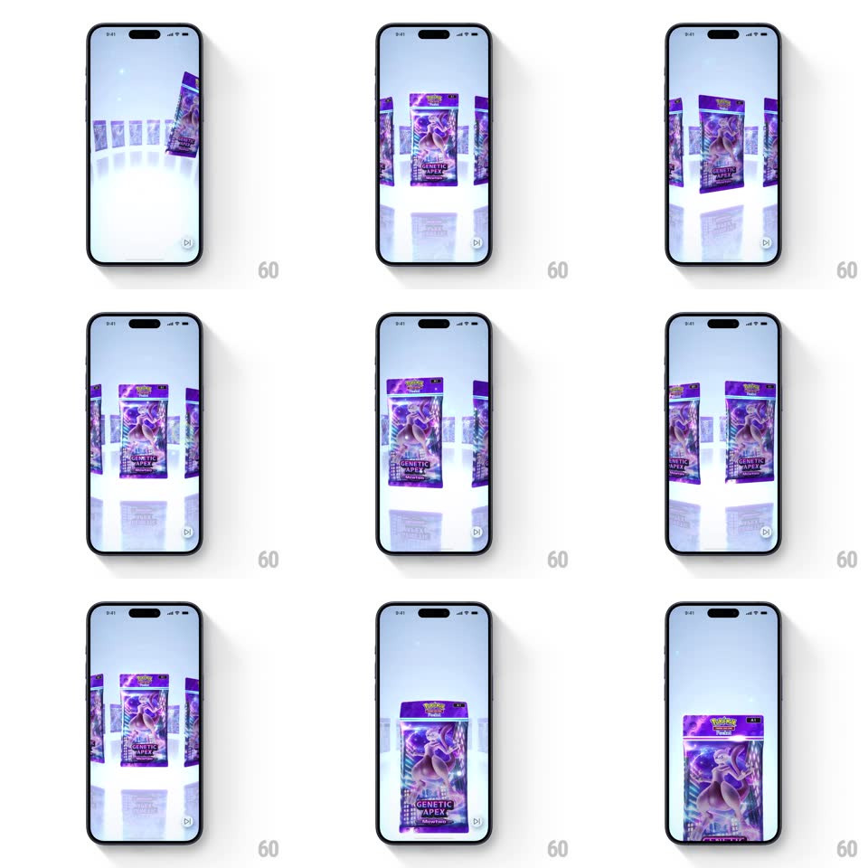

Media
Frame-by-frame

Rebuild this interaction 1:1: Pokemon TCG Pocket's pack picker - purple GENETIC APEX booster packs stand on a circular white 3D stage with live reflections; spinning the carousel with a drag rotates the ring with momentum, and tapping a pack zooms seamlessly into its full-screen close-up.

Rebuild this interaction 1:1: Pokemon TCG Pocket's pack picker - purple GENETIC APEX booster packs stand on a circular white 3D stage with live reflections; spinning the carousel with a drag rotates the ring with momentum, and tapping a pack zooms seamlessly into its full-screen close-up. ## Integration Integration: stack-agnostic spec - springs given as stiffness/damping, timed motions as duration + curve; map every value to your framework and animation library of choice. ## Scene A pale, soft-lit 3D stage: a glossy white circular platform holding a ring of upright booster packs (purple GENETIC APEX wrappers with Mewtwo art), each mirrored in the platform's reflection. The selected state is a full-screen close-up of one pack with the Pokemon logo on its crimped top. ## Motion spec Pattern: physics 3D ring carousel + zoom-to-detail. - Entry: the ring drops in from above (translateY -30% -> 0, 400ms, ease-out) and settles with a soft bounce. - Drag horizontally: the ring rotates with the finger (1:1 angular tracking); release flicks it with momentum (angular decay over ~1.5s) and it eases to rest with the nearest pack centered (snap spring ~200ms). - Packs face outward on the ring - side packs show their edges in true 3D perspective; reflections update every frame. - Idle: the ring slowly auto-rotates (~20s per revolution) until touched. - Tap a pack: the camera dollies in on it (FOV zoom, 350ms, ease-in-out) while the pack straightens to face flat - ending as the full-screen pack view, one continuous camera move with no cut. ## Calibration - The carousel reads as a physical turntable - rotation, reflection, and perspective stay consistent. - The zoom lands exactly on the front face - no drift after the transition. ## Reduced motion Ring rotates without momentum; zoom crossfades. ## Don't miss - The platform reflection is real-time, blurred and dimmed - it sells the 3D more than the packs do. - Packs at the back of the ring fade slightly into the stage fog - depth cueing.